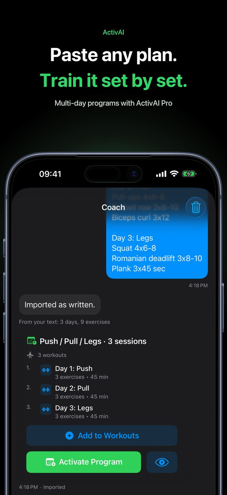
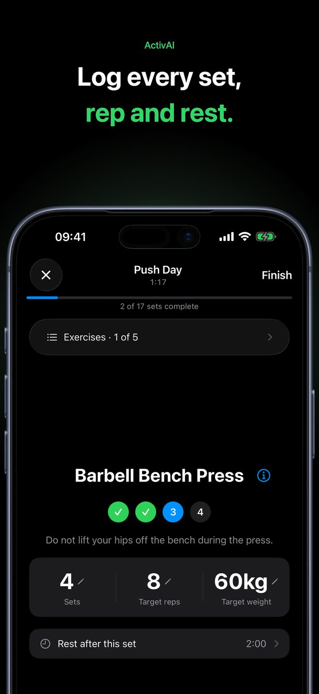

How to turn a ChatGPT workout plan into a tracked gym workout
ChatGPT, Claude and Gemini can write a reasonable gym plan in seconds. The hard part comes after: in the gym you scroll through a long chat, lose your place between sets, and nothing remembers what weight you lifted last week. A plan only helps if you can follow it and log it.
This guide shows how to ask for a plan that is easy to track, and how to move it into a workout tracker on your iPhone in under a minute.
1. Ask for a plan in a format that is easy to track
Most of the mess comes from the format of the answer: long paragraphs, tables and tips mixed in with the exercises. Ask for a plain list. A prompt like this works well:
Write me a 3-day gym plan for building muscle. I am an intermediate lifter with a full gym and 60 minutes per session. Format: - A heading for each day, like "Day 1: Push" - One exercise per line: name, sets x reps, rest time - No tables and no extra tips
You get something like this:
Day 1: Push 1. Barbell Bench Press - 4 x 6-8, rest 2 min 2. Incline Dumbbell Press - 3 x 8-10, rest 90 sec 3. Overhead Press - 3 x 8, rest 90 sec 4. Cable Triceps Pushdown - 3 x 12, rest 60 sec Day 2: Pull 1. Deadlift - 3 x 5, rest 3 min 2. Lat Pulldown - 3 x 10, rest 90 sec ...
Change the goal, days, equipment and time to match yours. If something in the plan looks wrong for you, ask the chat to change it before you copy it.
2. Copy the plan
Copy the whole plan as text. You don't need to clean it up: headings like "Day 1: Push", numbered lists and Markdown formatting are all fine.
3. Paste it into ActivAI
Open ActivAI on your iPhone, go to Coach, choose Paste plan, paste the text and send it. The app reads the days, exercises, sets, reps and rest times and builds a structured workout from them. Plans that are already clear are saved exactly as written.

4. Check the result before you train
Look through the exercises, rep ranges and rest times. A single session can be started right away. A multi-day plan is saved as a program; following a program day by day is part of ActivAI Pro, and the first session is free to try.
5. Train it set by set
Start the workout. You see one exercise at a time, enter the weight and reps you did, complete the set, and the rest timer starts. The timer also shows on your Lock Screen, so you can put the phone down. Next time, the app shows the weight and reps you recorded for that exercise.

Tips for better AI workout plans
- Say what equipment you have. "Dumbbells and a bench at home" gives a very different plan from "full gym".
- Give a time limit. Without one, AI plans tend to be too long to finish.
- Ask for rest times. A tracker can then run the timer for you.
- Keep exercise names standard. "Barbell Bench Press" is easier to track over time than "chest press variation".
- An AI plan is a starting point. It is not medical advice. If you have an injury or a health condition, talk to a professional first.
No plan yet?
You can also skip the chat. Tell the ActivAI coach your goal, experience, equipment and time, and it creates the session inside the app, ready to start. If you log other sports, such as a run or a surf, the coach takes them into account.
Try it with your own plan
ActivAI is free to download. Workout tracking, timers and history are free.